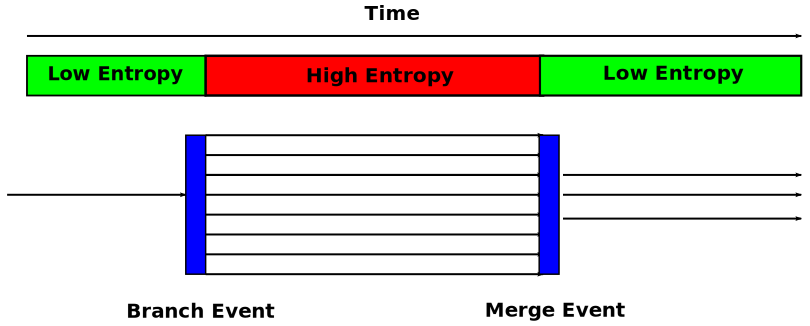

<!doctype html>
<html lang="en">

	<head>
		<meta charset="utf-8">

		<title> Simulation Speedup of ns-3 using Checkpoint and Restore</title>

		<meta name="description" content="A framework for easily creating beautiful presentations using HTML">
		<meta name="author" content="Kyle Harrigan">

		<meta name="apple-mobile-web-app-capable" content="yes" />
		<meta name="apple-mobile-web-app-status-bar-style" content="black-translucent" />

		<meta name="viewport" content="width=device-width,initial-scale=1.0, maximum-scale=2.0, user-scalable=no">

		<link rel="stylesheet" href="css/reveal.min.css">
		<link rel="stylesheet" href="css/theme/serif.css" id="theme">
		<link rel="stylesheet" href="presentation.css">
		<link rel="stylesheet" type="text/css" href="http://cdn.knightlab.com/libs/timeline/latest/css/timeline.css">

		<!-- For syntax highlighting -->
		<link rel="stylesheet" href="lib/css/zenburn.css">

		<!-- If the query includes 'print-pdf', include the PDF print sheet -->
		<script>
			if( window.location.search.match( /print-pdf/gi ) ) {
				var link = document.createElement( 'link' );
				link.rel = 'stylesheet';
				link.type = 'text/css';
				link.href = 'css/print/pdf.css';
				document.getElementsByTagName( 'head' )[0].appendChild( link );
			}
		</script>

		<!--[if lt IE 9]>
		<script src="lib/js/html5shiv.js"></script>
		<![endif]-->


	</head>

	<body>

		<div class="reveal">

			<!-- Any section element inside of this container is displayed as a slide -->
			<div class="slides">

				<section data-markdown data-separator="^\n---\n$" data-vertical="^\n--\n$">
				<script type="text/template">
					###  Simulation Speedup of ns-3 using Checkpoint and Restore   
					<br/><br/>

					Kyle Harrigan

					[kyle.harrigan@gtri.gatech.edu](mailto:kyle.harrigan@gtri.gatech.edu)

					---

					## Overview

					* ### The Problem
					* ### The Concept
					* ### Related Work
					* ### Contributions
					* ### Results
					* ### Conclusions / Future Work

					---
					

					## The Problem
					
					> A significant amount of computational resources 
					can be wasted performing unnecessary and/or repetitive computations

					--

					Example: NMS Campus Network Routing Table Calculation
					
					<div data-svg-fragment="svg/cp_restart_times.svg#[*|label=base]">
					</div>
					<small>nix vector routing disabled, explicitly
						compute routing tables</small>

					--

					### Other examples

					* In Monte Carlo analysis, early computations can eat up
					a significant amount of runtime, over and over again
					* Some run segments may have little or no variability across repeated trials
					* Rare events, importance sampling (Glasserman, et. al. )
					* Maybe more like this:
					
					

					---

					## Concept

					In PDES, we often attempt to improve simulation runtime 
					through parallelization efforts:

					* OpenMP/OpenMPI
					* HPC clusters
					* GPUs

					Also useful to minimize time spent evaluating "uninteresting" segments
					by providing a generic ability to checkpoint previous runs and restart using different algorithms / parameters?

					--

					Candidate technologies for checkpointing
					<div data-svg-fragment="svg/three_bears_gutenberg.svg#[*|label=base]">
						<a class="fragment" title="[*|label=build1]"></a>
						<a class="fragment" title="[*|label=build2]"></a>
						<a class="fragment" title="[*|label=build3]"></a>
					</div>

					--

					## Process Checkpointing
					* Use process checkpointing to save simulation state after costly computations
					or at decision points
					* Good balance between heavy-handed VM checkpoints and custom
					application-dependent state saving 
					* Permit modification of parameters upon restart<br/>
					  * (Not very useful or interesting without this!...) <!-- .element: class="fragment" data-fragment-index="1" -->
					* __Initially__: Use as tool to avoid repetitive computations
					* __Eventually__: As a method for interactive 
					analysis (Simulation Cloning), closed-loop algorithm optimization, etc.

					---

					## Previous Work

					--

					### Simulation Cloning 

					> Simulation cloning is a novel method for interactively testing alternative scenarios in parallel simulations based on the concept of branching at decision points. 

					<small><i>Maria Hybinette and Richard M. Fujimoto. 2001. Cloning parallel simulations. ACM Trans. Model. Comput. Simul. 11, 4 (October 2001), 378-407. DOI=10.1145/508366.508370 http://doi.acm.org/10.1145/508366.508370</i></small>

					--

					<div id="my-timeline"></div>

					--

					### Why DMTCP?

					* Works entirely in userspace (no kernel modification)
					* Supports Multithreaded, MPI, Distributed Applications
					* Supports many popular scientific applications
					  * MATLAB, Python, Perl, PHP, Emacs, GHCi, gnuplot, Lynx, Octave, Ruby...
					* Handles fork, exec, ssh, mutex/semaphore, sockets, pipes, file descriptors, 
					  shared memory, etc. 
					* Minimal code modifications required (unless you choose to)

					--

					### What makes this approach different?

					* Focus on simplicity, generality, ease of use
					* Assume minimal changes to underlying codebase as requirement
					 * In some cases, little/no access to source code
					 * In most cases, little money, time, or ability to modify
					* Less focus on HLA, RTI, distributed simulation and more on 
					speedup of parallel cluster or even desktop computations 


					---

					## Contributions
					* Demonstrated successful checkpointing and restart of
					ns-3 in userspace using DMTCP libraries
					* Demonstrated modification of parameters in restarted
					simulations using Namespace-based Access
					* Documented checkpoint sizes and times for various
					ns-3 examples 
					* Compared checkpoint sizes and times for various
					compression schemes

					--

					## Checkpointing "Module"

					* Required steps / modifications?
					 * install dmtcp (http://dmtcp.sourceforge.net/)
					 * `checkpointer.h`
					 * `checkpointer.cc`
					 * Updates to wscript
					* In other words...not much (I consider this good)

					In ns-3 script:

						#include <checkpointer.h>

						Checkpointer cp;
						cp.CheckpointAt(0.5); // schedule a checkpoint at 0.5 seconds	 


					--

					### Checkpoint, Modify, Restore  

					Launch example in the DMTCP environment:

					    $ dmtcp_launch --modify-env build/scratch/first-cp

					Prior to restart, make a `dmtcp_env.txt` in the
					ckpt folder:

					    NS3_ARGUMENTS="/NodeList/*/DeviceList/0/DataRate/10Kbps:/ChannelList/0/Delay/2ms"

					Then, restart to run w/ modified parameters.

					    $ ./dmtcp_restart_script.sh --ckptdir .

					Launch MPI job:

					    $ dmtcp_launch mpirun -np 2 ./waf --run simple-distributed

					--

					## How

					DMTCP places contents of dmtcp_env.txt into restarted environment

					    char *env = getenv(NS3_ARGUMENTS);

					Parse this, set ns-3 configuration variables using Namespace-based Access
                    (could easily use other methods)

						// parse into key value pairs, then..
						Config::Set(key, StringValue(value));

					---


					## Results 

					--

					Baseline run (Rate=5Mbps, Delay=2ms)

						$ dmtcp_launch --modify-env build/scratch/first-cp

					    At time 2s client sent 1024 bytes to 10.1.1.02 port 9
					    At time 2.00369s server received 1024 bytes from 10.1.1.1 port 49153
					    At time 2.00369s server sent 1024 bytes to 10.1.1.1 port 49153
						At time 2.00737s client received 1024 bytes from 10.1.1.2 port 9
						
					Modified upon restart using dmtcp_env.txt:

					    NS3_ARGUMENTS="/NodeList/*/DeviceList/0/DataRate/10Kbps:/ChannelList/0/Delay/2ms"

						$ ./dmtcp restart script.sh --ckptdir .
						At time 2s client sent 1024 bytes to 10.1.1.2 port 9
						At time 2.8452s server received 1024 bytes from 10.1.1.1 port 49153
						At time 2.8452s server sent 1024 bytes to 10.1.1.1 port 49153
						At time 3.6904s client received 1024 bytes from 10.1.1.2 port 9

					--

					### Checkpoint Sizes
					<div data-svg-fragment="svg/checkpoint_sizes.svg#[*|label=base]">
						<a class="fragment" title="[*|label=build1]"></a>
						<a class="fragment" title="[*|label=build2]"></a>
					</div>
					
					--

					</img>	

					--

					### Checkpoint Times

					<div data-svg-fragment="svg/checkpoint_times.svg#[*|label=base]">
						<a class="fragment" title="[*|label=build1]"></a>
					</div>
					
					---

					## Conclusions / Future Work

					--

					## Recap

					* Successful application of checkpoint/restore methodology to ns-3
					* Userspace-only approach very appealing
					* Suggest as a potential tool for saving time
					* Many other potential applications, as previously documented in the literature

					--

					### Operating Systems

					* ns-3 is at least partially supported on Linux, FreeBSD, Mac OS X, it	
					* DMTCP is Linux-only
					 * Reasons why here: http://www.slideshare.net/yuliang_neu/porting-dmtcp-macslides


					--

					Revision control for checkpoints?

					

					--

					### Checkpoint Management for Interactive Simulation

					* Revision control of potentially large files (BUP, git-annex, BOAR, git-bigfiles)
					* Metadata 
					* Incremental checkpointing
					* Files which do not remain open consistently (open/write/close)

					--

					### Simulation Cloning 
					
					>An eventual goal of this research is a generic, straightforward
					implementation of simulation cloning and/or  other advanced simulation techniques
                    which are easily applicable to a wide variety of simulations incuding ns-3


					---

					## References
					
					* https://github.com/kwharrigan/ns-3-dev-git/tree/checkpointer (the code)

					* J. Ansel, K. Arya, and G. Cooperman. Dmtcp: Transparent checkpointing for cluster computations and the desktop. In Parallel Distributed Processing, 2009. IPDPS 2009. IEEE International Symposium on, pages 1-12, 2009
					* See timeline
					* See paper for the rest

					---

					## Questions / Feedback?


				</script>
				</section>
			</div>
		</div>

		<script src="lib/js/head.min.js"></script>
		<script src="js/reveal.min.js"></script>

		<script>

			// Full list of configuration options available here:
			// https://github.com/hakimel/reveal.js#configuration
			Reveal.initialize({
				controls: true,
				progress: true,
				history: true,
				center: true,
				slideNumber: true,

				theme: Reveal.getQueryHash().theme, // available themes are in /css/theme
				transition: Reveal.getQueryHash().transition || 'default', // default/cube/page/concave/zoom/linear/fade/none

				// Parallax scrolling
				// parallaxBackgroundImage: 'https://s3.amazonaws.com/hakim-static/reveal-js/reveal-parallax-1.jpg',
				// parallaxBackgroundSize: '2100px 900px',

				// Optional libraries used to extend on reveal.js
				dependencies: [
					{ src: 'lib/js/classList.js', condition: function() { return !document.body.classList; } },
					{ src: 'plugin/markdown/marked.js', condition: function() { return !!document.querySelector( '[data-markdown]' ); } },
					{ src: 'plugin/markdown/markdown.js', condition: function() { return !!document.querySelector( '[data-markdown]' ); } },
					{ src: 'plugin/highlight/highlight.js', async: true, callback: function() { hljs.initHighlightingOnLoad(); } },
					{ src: 'plugin/zoom-js/zoom.js', async: true, condition: function() { return !!document.body.classList; } },
					{ src: 'plugin/notes/notes.js', async: true, condition: function() { return !!document.body.classList; } },
					{ src: 'plugin/reveal-svg-fragment/reveal-svg-fragment.js', condition: function() { return true; } }
					]
			});

		</script>

		
		<script type="text/javascript" src="js/jquery.min.js"></script>
		<script type="text/javascript" src="js/storyjs-embed.js"></script>

		<script>

			Reveal.addEventListener( 'ready', function( event ) {
				createStoryJS({
					type:       'timeline',
					width:      '100%',
					height:     '600',
					source:     'json/timeline.json',
					//source: 'https://docs.google.com/spreadsheet/pub?key=0AlhY160NLFCjdExHMFpjOUFiRmxaY1RjUWR3N2xMckE&output=html',
					embed_id:   'my-timeline'           // ID of the DIV you want to load the timeline into
				});
			});
		</script>


	</body>
</html>
